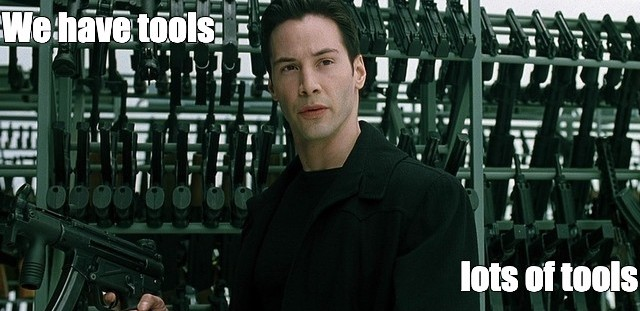

<h3>Math toolkit</h3>

<p style="text-align: start;">
  We'll use several mathematical 'tools' to make the painting more interesting
  <ul style="display: block">
    <li>Smoothstep</li>
    <div style="width: 50%; height:0px; opacity: 0;"></div>
    <li>Domain deformations</li>
    <li>Boolean operators between shapes</li>
    <li>Useful functions</li>
  </ul>
</p>

